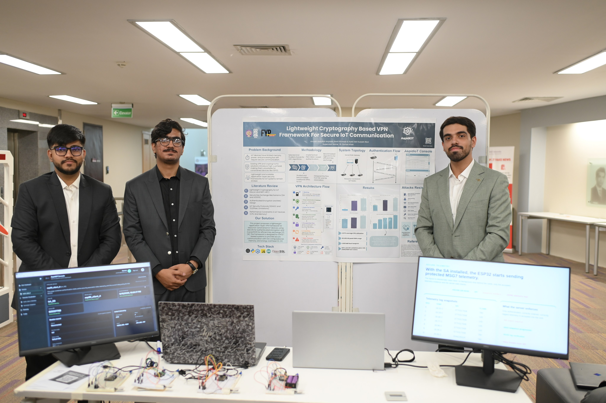

The question
Can constrained devices earn trust?
The project began around a practical problem: connected devices need reliable identity and authentication, but they cannot afford unnecessary complexity or overhead.
AspidIoT began as a question inside a final-year project: how can connected devices establish trust without carrying the weight of an enterprise stack? The answer became a working security framework—and then a product direction of its own.
An FYP has a deadline, limited hardware, and no room for vague abstractions. That pressure gave AspidIoT its character: build the smallest trustworthy path from device identity to a secure session, then make every part understandable.
The project began around a practical problem: connected devices need reliable identity and authentication, but they cannot afford unnecessary complexity or overhead.
We shaped the idea around lightweight cryptography, device identity, and a four-step message flow that could be tested on the edge instead of only explained on paper.
Identity request, fresh challenge, proof response, and session confirmation became the spine of Auth-X: a sequence people can inspect, reason about, and build on.
The FYP became the starting point. AspidIoT is now being shaped as a product platform, with Auth-X as its first module and more focused security tools on the way.
The project was not only designed and documented—it was demonstrated as a working system, then recognized by Habib University’s Computer Engineering program for the quality of its capstone design.

The team brought the architecture into the room: a live demonstration of the lightweight cryptography-based VPN framework, its authentication flow, and its connected-device stack.
The recognition affirmed the engineering behind the work—and gave the project a stronger foundation to grow from a final-year submission into a product with a longer horizon.
AspidIoT is not trying to make connected systems feel heavier. It is about giving the edge the right security primitives, in a form that is focused enough to ship and clear enough to trust.
Every layer has to earn its place on a constrained device.
Identity and freshness come before a session gets to move data.
Good security should be inspectable by the people who deploy it.